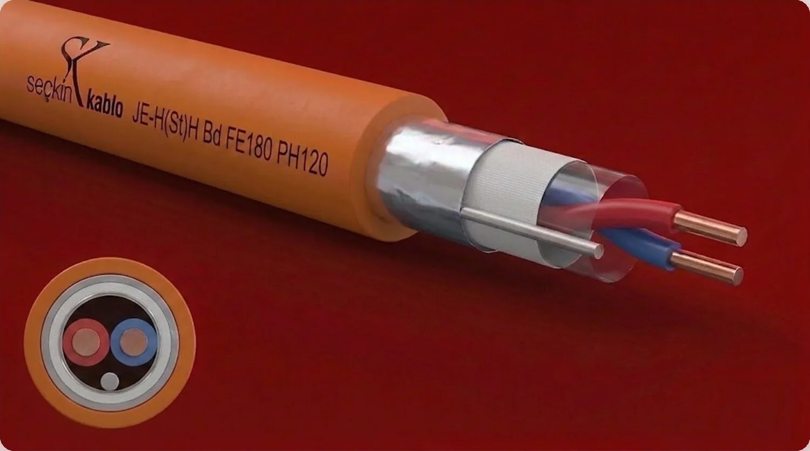
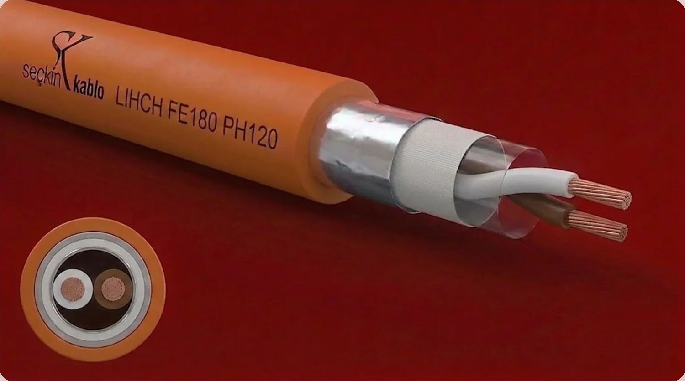
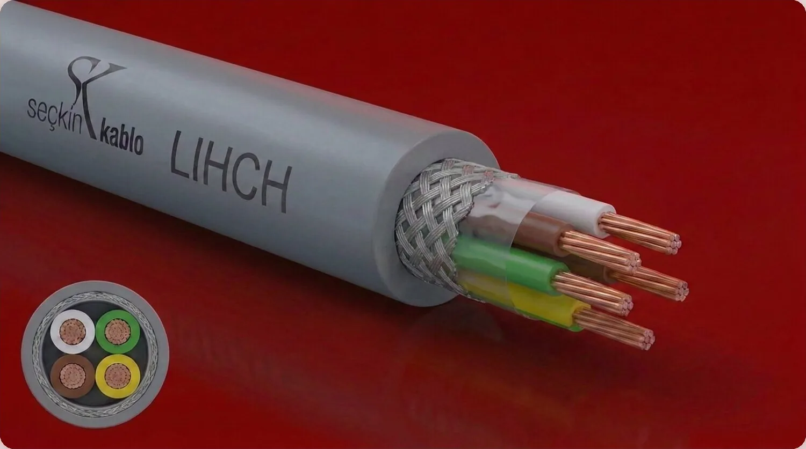

Yangına Dayanıklı Kablolar
Yangın anında devre bütünlüğünü koruyan fonksiyon korumalı kablolar. Mika–cam elyaf bariyeri ile 180 dk yalıtım (FE180) ve 120 dk devre sürekliliği (PH120). RAL 2003 turuncu halojensiz kılıf; yangın ihbar, acil aydınlatma, duman tahliye ve pompa devreleri için can güvenliği odaklı çözüm.

JE-H(St)H Bd FE180 PH120
Yangın ihbar, acil aydınlatma ve duman tahliye devrelerinde çalışmaya devam etmesi gereken hatlar için fonksiyon korumalı, mika bariyerli halojensiz kablo.
| İç iletken | Elektrolitik bakır tel, tek tel |
|---|---|
| Yangın bariyeri | Cam elyaf (mika) bant %100 kaplama — FE180 devre bütünlüğü |
| İzolasyon | Silikon kauçuk, çapraz bağlı yalıtım |
| Ekran | Al-PET bant %100 kaplama + kalaylı toprak teli |
| Dış kılıf | HFFR halojensiz — RAL 2003 turuncu |
| Çalışma sıcaklığı | −30 °C … +70 °C |
| Test gerilimi | 500 Vac damar/damar · 2000 Vac damar/ekran |
| Çalışma gerilimi | 225 V |
| Kapasite | 200 nF/km |
| Bükülme çapı | 10 × kablo çapı |
| Fonksiyon koruma | FE180 (180 dk yalıtım bütünlüğü) · PH120 (120 dk devre bütünlüğü) |
| Standartlar | DIN 4102-12 · IEC 60331 · VDE 0815 |
| Kesit (n×mm²) | Kablo çapı (mm Ø) | Bakır ağırlık (kg/km) | Toplam ağırlık (kg/km) |
|---|---|---|---|
| 1 × 2 × 0,8 + 0,4 | 7,0 | 11 | 40 |
| 2 × 2 × 0,8 + 0,4 | 8,0 | 21 | 60 |
| 4 × 2 × 0,8 + 0,4 | 8,6 | 41 | 90 |
| 1 × 2 × 1,0 + 0,6 | 6,5 | 19 | 51 |
| 2 × 2 × 1,0 + 0,6 | 8,0 | 34 | 82 |
| 1 × 2 × 1,5 + 0,8 | 7,4 | 34 | 76 |
Kullanım: yangın ihbar, acil aydınlatma, duman tahliye fanı, itfaiye asansörü, PA/anons sistemleri.
JE-H(St)H Bd
Yangın ihbar ve alarm devrelerinde halojensiz kılıf gerektiren kapalı alan tesisatları için ekranlı sinyal kablosu.
| İç iletken | Elektrolitik bakır tel, tek tel |
|---|---|
| İzolasyon | HFFR halojensiz yalıtım (VDE 0815) |
| Ekran | Al-PET bant %100 kaplama + kalaylı toprak teli |
| Dış kılıf | HFFR halojensiz — RAL 2003 turuncu |
| Çalışma sıcaklığı | −30 °C … +70 °C |
| Test gerilimi | 500 Vac damar/damar · 2000 Vac damar/ekran |
| Çalışma gerilimi | 225 V |
| Kapasite | 200 nF/km |
| Bükülme çapı | 10 × kablo çapı |
| Standartlar | VDE 0815 |
| Kesit (n×mm²) | Kablo çapı (mm Ø) | Bakır ağırlık (kg/km) | Toplam ağırlık (kg/km) |
|---|---|---|---|
| 1 × 2 × 0,8 + 0,4 | 7,0 | 11 | 40 |
| 2 × 2 × 0,8 + 0,4 | 8,0 | 21 | 60 |
| 4 × 2 × 0,8 + 0,4 | 8,6 | 41 | 90 |
| 1 × 2 × 1,0 + 0,6 | 6,5 | 19 | 51 |
| 2 × 2 × 1,0 + 0,6 | 8,0 | 34 | 82 |
| 1 × 2 × 1,5 + 0,8 | 7,4 | 34 | 76 |
Kullanım: yangın ihbar/alarm hatları, kapalı alanlar; halojensiz kılıf gereksinimi olan tesisatlar.

LIHCH FE180 PH120
Yangın anında çalışmaya devam etmesi gereken ekranlı sinyal ve kontrol devrelerinde kullanılan fonksiyon korumalı halojensiz kablo.
| İç iletken | Elektrolitik bakır, çok telli (HD 383 Sınıf 5) |
|---|---|
| Yangın bariyeri | Cam elyaf (mika) bant %100 kaplama — FE180 |
| İzolasyon | Silikon kauçuk, çapraz bağlı · DIN 47100 renk kodu |
| Ekran | Kalaylı bakır tel örgü, ort. %70 kaplama + PES bant |
| Dış kılıf | HFFR halojensiz — RAL 2003 turuncu |
| Çalışma sıcaklığı | −30 °C … +70 °C |
| Yalıtım direnci | 200 MΩ·km |
| Test gerilimi | 1500 V |
| Çalışma gerilimi | 300 V |
| Bükülme çapı | 7,5 × kablo çapı |
| Efektif kapasite | 120 nF/km damar |
| Fonksiyon koruma | FE180 (180 dk) · PH120 (120 dk devre bütünlüğü) |
| Standartlar | DIN 4102-12 · IEC 60331 |
| Kesit (n×mm²) | Kablo çapı (mm Ø) | Bakır ağırlık (kg/km) | Toplam ağırlık (kg/km) |
|---|---|---|---|
| 2 × 0,22 | 4,1 | 9,0 | 19 |
| 3 × 0,22 | 4,3 | 13,5 | 24 |
| 4 × 0,22 | 4,6 | 15,5 | 29 |
| 5 × 0,22 | 4,9 | 18,5 | 35 |
| 6 × 0,22 | 5,3 | 21,0 | 41 |
| 7 × 0,22 | 5,3 | 24,0 | 42 |
Kullanım: ekranlı sinyal/kontrol devreleri, yangın anında sürekliliği gereken kritik hatlar.

LIHCH
Halojensiz ekranlı sinyal-kontrol kablosu; kapalı alan tesisatlarında düşük duman ve halojensiz kılıf gerektiren hatlar için.
| İç iletken | Elektrolitik bakır, çok telli (HD 383 Sınıf 5) |
|---|---|
| İzolasyon | HFFR (VDE 0207-HI2) — DIN 47100 renk kodu |
| Ekran | Kalaylı bakır tel örgü, ort. %70 kaplama + PES bant |
| Dış kılıf | HFFR (VDE 0207-HM4) · RAL 2003 turuncu |
| Çalışma sıcaklığı | −30 °C … +70 °C |
| Yalıtım direnci | 200 MΩ·km |
| Test gerilimi | 1500 V |
| Çalışma gerilimi | 300 V |
| Bükülme çapı | 7,5 × kablo çapı |
| Efektif kapasite | 120 nF/km damar |
| Kesit (n×mm²) | Kablo çapı (mm Ø) | Bakır ağırlık (kg/km) | Toplam ağırlık (kg/km) |
|---|---|---|---|
| 2 × 0,22 | 4,1 | 9,0 | 19 |
| 3 × 0,22 | 4,3 | 13,5 | 24 |
| 4 × 0,22 | 4,6 | 15,5 | 29 |
| 5 × 0,22 | 4,9 | 18,5 | 35 |
| 6 × 0,22 | 5,3 | 21,0 | 41 |
| 7 × 0,22 | 5,3 | 24,0 | 42 |
Kullanım: ekranlı halojensiz sinyal ve kontrol devreleri; kapalı alan tesisatları.
Sık Sorulan Sorular — Yangına Dayanıklı Kablolar
FE180 ve PH120 arasındaki fark nedir?
FE180 (DIN 4102-12) alev karşısında 180 dakika yalıtım bütünlüğünü ifade eder. PH120 (IEC 60331) ise 120 dakika boyunca kablonun devre bütünlüğünü koruduğunu belgeler. Her ikisi birlikte tam fonksiyon korumasını sağlar.
Yangına dayanıklı kabloyu nerede kullanmalıyım?
Yangın ihbar hatları, acil aydınlatma, duman tahliye fanları, yangın pompaları, sesli anons/PA sistemleri, itfaiye asansörü ve tahliye rotalarında — kısacası yangın anında ÇALIŞMAYA DEVAM ETMESİ gereken tüm hatlarda.
Halojensiz olması neden önemli?
HFFR (halojensiz) kılıf yandığında zehirli gaz ve korozif duman salmaz, görüş mesafesini korur. Kapalı alan ve toplanma amaçlı binalarda tahliye sırasında can güvenliği için gereklidir.
Turuncu renk zorunlu mu?
RAL 2003 turuncu kılıf; yangın devrelerinin diğer tesisattan görsel ayırt ediciliği için standart uygulamadır. Tesisat resimleri ve saha kontrolünde hızlı tanımlanma sağlar.